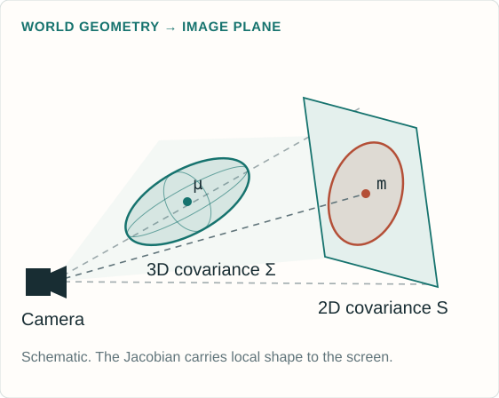
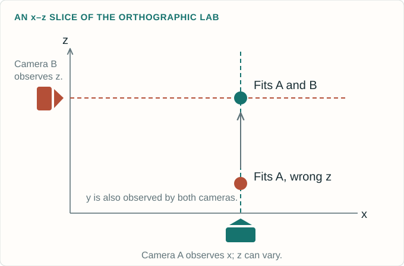
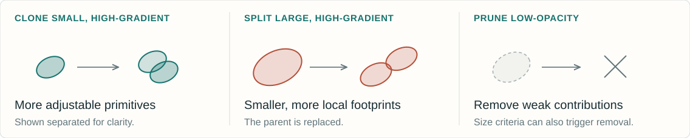

The original 2023 method learns an explicit radiance field from calibrated photographs. No photograph contains a ground-truth list of Gaussian centers or covariances. Training renders a candidate scene, measures image error and differentiates that error through the renderer. The first laboratory optimizes a small 2D Gaussian scene using the same photometric objective. The second laboratory isolates 3D position observability with orthographic cameras. Both calculate their updates from image residuals. They are teaching models, not reproductions of the CUDA pipeline. The preview uses actual optimization results from the first laboratory. The final main section then makes pose trainable, compares the original objective with MonoGS online losses, traces the pose gradient and distinguishes differentiability from identifiability.
The lesson follows the causal order of the calculation: parameters determine a rendered image, the image determines a scalar loss, and the loss supplies derivatives for the parameter update. After two fixed-camera laboratories, the joint-estimation section changes the unknowns and compares the original 3DGS objective with MonoGS online SLAM. It then explains pose derivatives, local differentiability and what the observations can identify. Read Notes expands every slide with assumptions and primary references. All three live laboratories can also be opened as responsive pages on a smaller screen.
Every camera renders the same trainable Gaussians.
The original reconstruction fixes the cameras and optimizes the scene.
Explanation and assumptions
SfM, often through COLMAP, supplies a sparse point cloud and calibrated image poses in one coordinate system. These points seed the means and colors of the initial Gaussians. The original 3DGS task treats the camera calibration as input. This assumption applies to the first part of the lesson and its two labs; the joint-estimation section later makes the camera or camera-bearing UE pose trainable. Across iterations, a sampled camera changes which photograph supervises the shared Gaussian scene. There is no target splat list and no required point-to-point correspondence between a learned Gaussian and a true surface point.
The stored scales are log-scales and the stored opacity is a logit. Exponentiation produces strictly positive axis lengths and a sigmoid produces opacity between zero and one. A normalized nonzero quaternion supplies a rotation. These choices keep the covariance positive definite while allowing anisotropy. The color is represented by spherical harmonics in the original method, rather than a single fixed RGB triplet. The 2D teaching laboratory keeps constant RGB, uses a 2D angle instead of a 3D quaternion, and optimizes sigmoid RGB values. Those appearance constraints are simplifications of the original renderer.
J is the 2 × 3 Jacobian of perspective projection.

Explanation and assumptions
The projection Jacobian is J=[fx/Z,0,−fx X/Z²; 0,fy/Z,−fy Y/Z²]. The covariance equation is a first-order local affine approximation. Perspective projection does not globally preserve a Gaussian density. The reference rasterizer additionally adds a 0.3 pixel-squared diagonal filter to the screen covariance. Both the projected mean and projected covariance depend on the 3D position. A full position derivative therefore includes more than the projected-mean path. The 2D lab begins directly with screen-space ellipses and does not implement this perspective stage.
The learned opacity \(o_i\) belongs to the Gaussian.
The alpha \(\alpha_i(p)\) varies across pixels.
No \(1/\sqrt{\det S_i}\) density-normalization factor appears.
Widening a splat changes how many pixels it influences.
Explanation and assumptions
The Gaussian here is an unnormalized rendering kernel. Treating it as a normalized probability density would change how scale affects brightness and would produce different gradients. In the reference implementation, alpha is capped at 0.99, negligible contributions below 1/255 are skipped and almost-opaque pixels terminate traversal. These implementation thresholds create boundaries in the otherwise smooth calculation. The teaching lab evaluates the full smooth footprints at a fixed order without the production culling and early-termination thresholds.
Here b is the background color and the splats are ordered from front to back for the pixel. For two splats with alpha values 0.6 and 0.5, the first contributes 0.6 of its color. The second receives transmittance 0.4 and therefore contributes 0.2. The remaining background weight is 0.2. The weights sum to one when the background term is included. Raising a front opacity changes both its own contribution and the visibility of all the color behind it. Original 3DGS uses tile binning and sorting for an efficient approximate visibility order.
An iteration samples a camera and differentiates its image loss.
WHAT THE LOSS SEES
The rendered pixels and observed pixels.
It never receives the correct Gaussian center, shape or count.
Explanation and assumptions
The reference code computes (1−lambda_dssim) times L1 plus lambda_dssim times (1−SSIM), with lambda_dssim=0.2 by default. Its D-SSIM convention has no extra factor of one-half. Other texts sometimes define DSSIM as (1−SSIM)/2, so the convention needs to be stated. The full objective can be understood as an average over training views, while the implementation samples individual cameras. Optional depth regularization and exposure-related features in later repository revisions are not part of the original 2023 base loss explained here.
At exactly zero residual, a zero subgradient is a common choice.
Explanation and assumptions
L1 loss measures the mean absolute difference across every pixel and RGB channel. A corresponding image gradient has a sign determined by whether the prediction exceeds or falls below the observation. The factor 1/(3HW) normalizes image size. This derivative is the starting signal for backpropagation, not yet a direction in world space. For unknown pose, the observed pixels still exist: render at the current pose estimate and compare on the same pixel grid. The renderer decides which parameter changes could create the desired pixel change. A change that helps one pixel can hurt others, and their contributions combine in the parameter gradient.
11 × 11 Gaussian window, standard deviation 1.5 pixels.
\(C_1=0.01^2,\quad C_2=0.03^2\) for images scaled to [0,1].
Average the SSIM map over windows and channels.
Explanation and assumptions
For a window, x contains predicted pixel values and y the corresponding target values. The normalized Gaussian weights define local averages and second moments. The numerator rewards agreement in means and covariance while the denominator normalizes brightness and contrast. Positive constants stabilize nearly constant or dark windows. The official unfused implementation uses zero padding for convolution, with an 11×11 window of standard deviation 1.5. Its gradient couples neighboring pixels through these statistics. The teaching laboratory implements the same local-window construction and explicitly differentiates its operations. SSIM is a structural image similarity objective, not an independent depth or surface constraint.
An illustrative calculation makes the scalar loss explicit.
MEAN ABSOLUTE RGB ERROR
0.10
Weight: 0.8
SSIM = 0.75
0.25
1 − SSIM, weight: 0.2
COMBINED LOSS
0.13
0.8 × 0.10 + 0.2 × 0.25
A COEFFICIENT IS NOT A FRACTION OF LEARNING
The relative effect also depends on each term’s magnitude and derivative.
Changing λ changes both the scalar loss and the direction of the parameter update.
Explanation and assumptions
These are illustrative input values, not a benchmark measurement. If L1=0.10 and SSIM=0.75, then the reference default gives 0.8×0.10+0.2×(1−0.75)=0.13. The coefficient 0.8 does not mean exactly 80 percent of the optimization comes from L1, because the terms have different derivatives and scales. The first lab recomputes all components from its actual images and permits changing lambda. Loss values measured under different lambda settings are different objectives and should not be read as a single continuous convergence curve.
r is the RGB loss gradient. \(C_{>i}\) is the composited color behind this splat, including the background.
Explanation and assumptions
Hold the current depth order fixed and write the pixel as C_before+T_i[alpha_i c_i+(1−alpha_i)C_tail]. Differentiating gives dI/dalpha_i=T_i(c_i−C_tail) and dI/dc_i=T_i alpha_i times the RGB identity. Thus increasing alpha replaces some tail color with the splat color. Whether this helps depends on the loss gradient and their color difference, not just on whether the pixel is dark. The transmittance factor attenuates gradients to occluded splats. This slide is an independent derivation of the compositing equation. The CUDA backward kernel implements the corresponding derivative with its own numerical and visibility bookkeeping.
The single pixel is at p=1, the center is initially m=0, standard deviation is one, opacity is 0.8, color is one and the background is black. The target is 0.8. For this one residual, dL/dI=−1 and dI/dm=I(p−m)/s²=0.4852245, hence the center derivative is negative. Gradient descent with step size 0.1 increases the center to 0.04852245, raises the predicted pixel to 0.5087501167 and reduces absolute error to 0.2912498833. The step follows an image-loss derivative. It does not use a target center. This tiny example cannot identify every splat parameter and does not imply that every Adam step in the full nonconvex problem decreases loss.
Sum the chain-rule contributions across the image and sampled views.
WHY SPLATS DO NOT JUST GROW
A larger footprint can brighten a missed foreground pixel.
It can also spill color into a background pixel that was already correct.
The competing gradients shape the ellipse and its opacity.
Explanation and assumptions
The center derivative shown here holds the screen covariance fixed. The full 3D center derivative also includes the projected covariance and view-dependent appearance paths. For an unnormalized footprint, the screen-covariance derivative is alpha/2 times S inverse d d transpose S inverse. A positive opacity change affects every pixel under the footprint, and a scale change redistributes coverage. The desired update is the aggregate of those image effects. Soft overlapping footprints make small changes visible to the objective, but a Gaussian far from all residual support can still receive weak gradients.
The next camera then evaluates those changed parameters from another viewpoint.
1 · SAMPLE A CAMERA
Choose its observed image and fixed calibration.
2 · RENDER
Project, sort and alpha-composite the current scene.
3 · MEASURE THE LOSS
Average RGB error and local structural dissimilarity.
4 · BACKPROPAGATE
Differentiate through the evaluated rendering operations.
5 · UPDATE WITH ADAM
Change the continuous Gaussian parameters.
6 · ADAPT CAPACITY
Periodically clone, split or prune Gaussians.
Explanation and assumptions
This is a conceptual ordering of the learning loop. The exact code interleaves bookkeeping, densification and optimizer updates, so a density-control iteration need not follow this schematic order literally. Adam uses running estimates of gradient moments and group-specific learning rates. The basic descent form theta_new=theta−eta grad L explains direction, but it is not the full Adam update. Discrete density changes alter the number of variables and are handled separately from ordinary differentiation. Visibility sorting, culling and thresholds mean the full renderer is not globally smooth across every possible scene change.
Every point on the loss curve comes from a fresh render and a real update.
TRY THIS
Press Train 50, then repeat.
Compare the current render with the target and fixed-scale absolute residual.
Reset and freeze position or shape to see what the remaining variables can compensate for.
MODEL BOUNDARY
2D anisotropic Gaussians, constant RGB and a fixed front-to-back order.
Mean L1 plus local 11 × 11 SSIM, with analytic gradients and Adam.
No perspective projection, spherical harmonics or adaptive densification.
Explanation and assumptions
The lab isolates the parameter-to-image-to-loss-to-update mechanism. Its target is generated once from a hidden synthetic scene. Optimization receives the target image, not the generating parameters. A perturbed initialization is used so useful gradients reach the footprints. The data are noiseless and the model has enough capacity, which makes convergence easy to inspect. The teaching optimizer uses explicit stability bounds and decaying, group-specific learning rates. These favorable conditions are deliberate and do not establish real-world accuracy or guarantee convergence from arbitrary random initialization. Changing lambda or the active parameter groups starts a new optimization phase in the displayed history. Footprint outlines show geometry for inspection and are not part of the loss.
This live 2D teaching model computes its own render, exact loss components and analytic gradients. It does not replay a prerecorded curve or interpolate hidden target parameters. Start with all parameter groups active and lambda=0.2, then change one condition at a time after Reset. All displayed error images use a fixed scale. The full-size lab includes the model assumptions and keyboard-accessible controls.
A better image need not recover the generating parameters
Several parameters can explain some of the same pixel changes.
WHAT THE LAB ESTABLISHES
The loss is computed from the image.
Its gradient can improve the rendered prediction.
Freezing parameters changes which errors the model can correct.
WHAT IT CANNOT ESTABLISH
A unique true set of centers, colors or opacities.
For one splat on black, color and opacity can trade off through their product.
Real-world 3D reconstruction quality from a tiny 2D image fit.
Explanation and assumptions
For a single constant-color splat on a black background, the rendered image is the product of its color, opacity and footprint. Different color-opacity pairs can give the same product within valid ranges. Overlap and background change that ambiguity but do not make every parameterization uniquely identifiable. It is therefore more meaningful to inspect predicted images and held-out views than to demand that every learned primitive match a hidden synthetic parameter list. The lab can display residual and component losses without claiming exact scene recovery.
A second view checks where the splat really projects
The same 3D center must satisfy both camera images.

SHARED 3D PARAMETERS
One projection can agree while depth remains wrong.
Another camera converts that depth error into a visible image displacement.
Useful parallax makes some previously invisible parameter changes observable.
Explanation and assumptions
For a perspective camera, a center can move along a viewing ray while keeping its projected mean fixed, and a corresponding covariance change can preserve its footprint. A second noncoincident camera generally changes that projection. The next lab uses a simpler exact construction: camera A observes (x,y), camera B observes (z,y), and a held-out oblique camera observes a combination of x and z. With only A, z never enters the rendering equation. No optimizer can infer it from that image. With A and B, all three center coordinates affect the observations under the lab’s known-shape assumptions. This isolates observability rather than solving arbitrary scene geometry.
The second camera changes which center coordinates the loss can constrain.
THE EXPERIMENT
Train with one view. Watch its error fall while the unobserved depth stays wrong.
Add two views and continue from that same center.
Compare the held-out oblique image before and after.
CONTROLLED ASSUMPTIONS
One 3D isotropic Gaussian.
Known opacity, color and covariance.
Known orthographic cameras.
Only the three center coordinates are learned.
Explanation and assumptions
The target images are synthetic observations generated once. The optimizer compares only the selected training images. The held-out view and optional reference-center visualization are used for evaluation, never for training. In a fresh one-camera run, the depth derivative is exactly zero and z remains at its initial value. Switching back to one camera later freezes the current z. With the second camera enabled, z acquires a gradient. Keeping shape and appearance fixed prevents other ambiguities from obscuring this one. Real scenes involve occlusion, uncertain camera poses, anisotropic covariance and view-dependent color, so two views do not guarantee unique full-scene recovery.
This lab optimizes only the center of a known isotropic Gaussian from synthetic RGB target images, using calibrated orthographic projections. It uses the same combined photometric loss as the first lab. The single-view z gradient is zero by construction. Adding the second view permits image-loss optimization of z and improves a separate oblique view in the standard scenario. The reference center is evaluation information only. This is a local identifiability example, not a proof that all Gaussian scenes are identifiable.
For a camera on the UE: \(T_{CW}^{v}=T_{CU}T_{UW}^{v}\), with known camera–UE extrinsics. Gradients pass through this composition.
Explanation and assumptions
The renderer is R(Theta,T_v;K_v), with calibrated intrinsics K_v held fixed throughout this comparison. Theta contains the shared Gaussian parameters; T_v is a six-degree-of-freedom camera transform. Joint estimation changes the optimization variables, not necessarily the residual. No ground-truth pose or Gaussian parameters are required by this image objective. For UE notation, T_AB maps coordinates from B into A: T_UW is world-to-UE and T_CU is the known UE-to-camera transform, so T_CW=T_CU T_UW. A body-to-world pose can instead be used through its inverse. The chain rule then propagates the camera-pose derivative to the UE pose. This is a camera-bearing UE example; a radio-only UE would require its own radio forward model and measurement likelihood. Gauge constraints, explained later, are implicit in the joint minimization.
A camera records RGB values without recording its exact world pose.
FIXED MEASUREMENT
\[I_v^*(u,k)\]
Read the RGB value at pixel \(u\).
Keep this photograph fixed during optimization.
The star labels an observed image, not a known pose.
CURRENT PREDICTION
\[\hat I_v(u,k)=\mathcal R(\Theta,T_v;K_v)(u,k)\]
Render the current splats using the current pose guess.
Compare at the same sensor-pixel coordinates.
WHAT YOU DO NOT NEED TO EVALUATE THE LOSS
No true pose \(T_v^*\), true splat list, or true 3D point correspondence. The renderer predicts which splats affect each pixel.
Explanation and assumptions
The measured image is available even if its position and orientation in the world are unknown. Associate each observed frame with its own pose variable and known intrinsics. At every iteration, render that frame using the current candidate pose and the shared candidate map, then subtract the fixed observed RGB values at the same image coordinates. The current renderer induces the geometric association; a ground-truth pixel-to-3D correspondence is not supplied. Wrong poses generally misalign the predicted features, producing residuals. The observations are never re-rendered at the current pose. This is image supervision, not pose supervision such as a distance to a known true pose. Being able to evaluate the residual does not imply it uniquely determines the pose: initialization, overlap, texture and gauge constraints still matter.
The pixel mean is 0.1 because the three absolute errors are 0.1, 0.2 and 0.0. No pose label enters this arithmetic. The full-image L1 is the average of these pixel means over H times W pixels. A different candidate pose changes the predicted triplet through the renderer, while the observed triplet stays unchanged. The sum over all pixels and views decides whether the pose or scene update is helpful overall. The demo’s pixel inspector reports the same calculation using its actual current floating-point render and fixed observations. If a validity mask is used, its reduction and denominator must be stated; this teaching lab uses every pixel without a mask.
\(\lambda=0.2\): \(0.8\mathcal L_1+0.2(1-\mathrm{SSIM})\). No extra 1/2.
Explanation and assumptions
Here ell_v is the per-view combined loss and g_v is its image gradient; J_xi and J_Theta are the renderer Jacobians for the local camera pose increment and the shared Gaussian parameters. For the displayed average over views, divide each pose gradient by V and average the map contributions. The SSIM quantity is averaged over image locations and channels. For corresponding local predicted and observed windows x and y, SSIM=(2 mu_x mu_y+C1)(2 sigma_xy+C2)/[(mu_x²+mu_y²+C1)(sigma_x²+sigma_y²+C2)]. Weighted local means, variances and covariance are defined in the earlier SSIM slide. The reference uses 11 by 11 Gaussian weights with sigma=1.5, zero padding, and C1=0.01², C2=0.03² for normalized RGB. SSIM couples neighboring pixel derivatives, and those derivatives flow to pose through the same renderer as L1. A pose-aware backward path is required; deleting SSIM neither creates nor replaces it. The demo defaults to this combined objective and lets lambda reach zero to isolate L1. Lambda=1 isolates SSIM and is also mathematically compatible with pose gradients.
Joint pose–splat optimization can also use L1 + SSIM. Removing SSIM is a MonoGS online-loss choice, not a requirement for pose gradients.
Explanation and assumptions
These are paper-level objective forms, not a claim that every Gaussian-splatting SLAM system uses one loss. The original implementation uses mean RGB L1 and 1-SSIM, without a factor of one-half. The MonoGS paper uses photometric L1 for RGB tracking and adds isotropic regularization for joint mapping. W includes a local keyframe window and sampled past keyframes. The implementation refines a configured subset of poses; not every historical pose moves at every step. Pixel validity masks, exposure compensation, opacity weighting and reductions are omitted from the displayed shorthand and are discussed in the notes for the next slides. In the official backend, the later color_refinement routine uses L1 plus SSIM; that is separate from the online joint-mapping objective. Adding pose variables is mathematically compatible with any image discrepancy that supplies suitable image derivatives, including SSIM. The optimization problem and the choice of loss should therefore be described independently.
D_v* must be an observed depth image, with invalid sensor pixels masked. A depth image rendered from the current map is a prediction and does not by itself create an independent measurement. The isotropic penalty acts on the positive physical scales s_i, not their logarithms, and its per-Gaussian mean scale depends on all three axes. It penalizes anisotropy rather than requiring identical sizes across Gaussians. It neither supplies missing metric observations nor guarantees correct geometry. The supplement reports lambda_pho=0.9 and lambda_iso=10 for its experiments; these are not universal weights. The current code uses means in places where the paper writes sums, and its RGB-D helper has a fallback alpha of 0.95 when the configuration omits it. Weights depend on units, masks and reductions, so copy neither numbers nor normalization blindly. Other sensors, such as an IMU or radio array, require a separate residual derived from their own measurement models; they are not implicit in RGB splatting.
A pose change moves every visible splat coherently. A scene change can move individual splats.
Explanation and assumptions
The equations display the image-residual contribution to each gradient; additional priors contribute their own derivatives. xi_v denotes a local six-dimensional pose increment, not six unconstrained entries of a rotation matrix. A scene parameter affects its visible projected footprint and, through compositing, can influence the contributions behind it. A pose perturbation changes camera coordinates for the visible map as a whole. A complete pose derivative includes both projected mean and projected covariance, and any pose-dependent appearance or depth terms present in the chosen model. Analytic derivatives, automatic differentiation and custom backward kernels are implementation routes to the same chain rule. In a custom rasterizer, merely setting requires_grad=True on the pose does not establish a working derivative: the rasterizer must expose the appropriate pose backward path. MonoGS explicitly supplies these camera Jacobians.
Rendered intensity rises to 0.620763; loss falls to 0.016063.
Explanation and assumptions
This is an original scalar teaching derivation, not the MonoGS objective or a reproduction of its renderer. Squared error makes the arithmetic easy to follow; MonoGS online RGB uses L1. Here t is the camera position on the world axis, so its world-to-camera translation is -t. That distinction explains why the camera-position gradient has the opposite sign to the world-space Gaussian mean gradient. Gaussian amplitude and width are fixed and the background is zero. Both updates use gradients evaluated at the same old state. With e=exp(-1/2), the derivatives are dL/dmu=(e-0.8)e and dL/dt=-(e-0.8)e. Moving both variables improves the image discrepancy but cannot identify them separately: any common translation of mu and t preserves m. A single observation therefore demonstrates differentiability and ambiguity at the same time. The worked values are independently checked by central differences during authoring.
Pose changes the center and the projected covariance.
The exponential map keeps the rotation valid.
Explanation and assumptions
For a left increment, x_C+ is approximately x_C+delta_v+delta_omega cross x_C, yielding [I,-[x_C]_cross]. J_pi is the perspective projection Jacobian already introduced earlier in the deck. The derivative is evaluated at zero increment. With translation-first coordinates, the hat operator places [delta_omega]_cross in the upper-left 3 by 3 block and delta_v in the translation column of a 4 by 4 Lie-algebra matrix. Exp maps that local update into SE(3); then it is left-composed with the old transform. Other conventions are valid but have different Jacobians. The camera-pose derivative is incomplete if it differentiates only the projected mean: the covariance depends on R directly and through x_C in J_pi. Pose-dependent view-direction color and depth must also be included when used. To optimize UE body pose, compose the known sensor extrinsic as described at the start of this section and apply the chain rule.
Yes: joint pose and splat estimation has gradients
The qualification is local differentiability of the continuous computation.
CONTINUOUS PARAMETERS
Projection, Gaussian footprints and alpha compositing have derivatives within a fixed active set and depth order.
PIECEWISE-SMOOTH LOSSES
L1 has a kink at zero; an optimizer uses a chosen subgradient there. SSIM also supplies image derivatives.
DISCRETE PIPELINE DECISIONS
Sorting changes, hard visibility masks, keyframe selection, insertion, splitting and pruning are not differentiated as smooth operations.
Explanation and assumptions
Yes is the answer for continuous pose and splat variables, with calibrated projection in its valid domain and a renderer that implements pose derivatives. For the active splats and order chosen by the forward pass, backpropagation follows the smooth local arithmetic except at loss kinks or active clamps. The discrete order and visibility decisions can change between iterations; the derivative of their decisions is not ordinarily propagated. L1 uses its ordinary derivative off zero and a chosen subgradient at zero. Stable SSIM uses positive constants in its denominators. Density changes alter the number of parameters and sit outside a conventional fixed-dimensional backward pass. These qualifications already exist in fixed-pose 3DGS and do not arise solely because pose is trainable. A differentiable measurement loss is also different from differentiating through the entire multi-iteration optimizer or the whole SLAM algorithm; joint estimation needs the former, not necessarily the latter.
Compute both gradient blocks from the shared residuals. Update the active variables.
ALTERNATING REFINEMENT
Update pose with the map held fixed; then update the map with pose held fixed.
Both blocks still solve one coupled objective.
Explanation and assumptions
Bars denote quantities held fixed for the displayed subproblem. RGB tracking here shows the paper-level photometric term; RGB-D adds the depth residual, while tracking can also refine nuisance exposure parameters. An isotropic map prior is constant with respect to pose during a map-fixed tracking step and therefore contributes no pose gradient. In the official MonoGS pipeline, a front end first tracks the incoming frame against the current map. A back end then refines Gaussians and selected local keyframe poses. Past keyframes can supervise the map while their poses remain fixed. Simultaneous gradient updates and block-coordinate or alternating updates are different optimization schedules for a coupled problem; they need not follow the same trajectory or converge to the same local minimum. No schedule removes gauge ambiguity or creates missing observations. The first two browser labs remain controlled fixed-camera examples; the third adds a constrained 2D joint pose and map fit. None is a full joint SLAM implementation.
A gradient does not guarantee a unique pose and map
Several parameter changes can explain the same observed images.
THE SAME ONE-DIMENSIONAL EXAMPLE
\[m=\mu-t=(\mu+a)-(t+a)\]
Move the splat and camera together: the projected position and image loss are unchanged.
FIX THE COORDINATE FREEDOM
Anchor a pose to define the world frame.
Monocular images still leave metric scale unresolved without a metric constraint.
ADD USEFUL OBSERVATIONS
Overlapping views and parallax constrain relative geometry.
Measured depth or a known baseline provides metric information.
Explanation and assumptions
The scalar example has an exact null direction: changing mu and t by the same amount leaves every rendered pixel unchanged. In 3D, jointly transforming the map and camera frames preserves the image measurements; anchoring a pose removes the arbitrary global rigid frame. For monocular perspective imagery, scaling the scene, translations and Gaussian sizes together also preserves the projected geometry, leaving a metric-scale ambiguity unless additional metric information is supplied. Fixing one pose alone does not fix that scale. Scale-dependent priors or numerical bounds may select a numerical scale, but do not turn it into measured physical scale. Multiple views and parallax help local observability but do not guarantee uniqueness for all scene parameters. Low texture, occlusion, flexible color or shape, and poor initialization can still produce weak gradients or incorrect local solutions. The correct claims are that continuous derivatives are available and that the images constrain certain combinations of parameters, not that differentiability proves recovery.
The observed images stay fixed while both kinds of parameters change.
TRY THREE UPDATE MODES
Start with Joint and press Run. Watch the two predictions approach their fixed observations.
Reset and compare Pose only or Splats only.
Set the SSIM weight to zero, then compare with the default 0.2.
CONTROLLED MODEL
Two 2D orthographic views; camera 0 anchors the coordinate frame.
Learn shared splat centers and camera 1 rotation + translation.
Known anisotropic shapes, RGB, opacity and fixed depth order.
Explanation and assumptions
This third lab computes actual image losses and analytic gradients for both pose and Gaussian centers, including the rotation of anisotropic footprints. It is a constrained SE(2) teaching model, not a full SE(3) SLAM system or MonoGS benchmark. Synthetic images are generated once and remain fixed. The optimizer does not receive a true pose or true center list. Fixing the first camera defines a coordinate frame; the lab also assumes known shapes and calibrated orthographic scale, so it is not evidence that a general monocular system recovers metric scale. Simultaneous updates evaluate both blocks at the old state; alternating updates refine the pose and then recompute the map gradient. Both optimize the same L1 plus SSIM objective. Reset preserves your selected loss and update settings for comparisons.
The full-size interactive lab shows two observed images, two current renders and fixed-scale absolute residuals, a parameter view and the loss history. Its controls select joint, pose-only or splat-only updates, simultaneous or alternating schedules, and the SSIM mixture weight. The pixel inspector calculates L1 using observed and predicted RGB, without knowing the true pose. All plots and statistics come from the current numerical model rather than a prerecorded animation. As with the previous laboratories, the synthetic scene, good initialization and fixed shape and appearance simplify the problem so the mechanism is visible.
Original 3DGS periodically changes the number of primitives.

WHERE TO ADD CAPACITY
Large average screen-position gradient magnitudes flag regions the current representation struggles to fit.
A SEPARATE HEURISTIC
Clone, split and prune change the model. They are discrete operations, not another term in the image loss.
Explanation and assumptions
The reference method accumulates screen-space center gradient magnitudes and divides by the number of visible observations. High-average-gradient small Gaussians are cloned, while high-average-gradient large Gaussians are split. Very low opacity and certain excessive-size conditions cause pruning. The paper describes moving clones along a gradient direction, while the released densify_and_clone copies positions directly and lets subsequent optimization separate them. Split children are sampled around a parent and receive smaller scales. Typical reference defaults activate densification after iteration 500, repeat every 100 and stop at 15000, with opacity reset every 3000. Reset clamps opacity down to at most 0.01. These are implementation settings, not universal constants, and the browser labs do not implement density control.
Textureless areas, reflections or changing lighting.
Nonconvex optimization and redundant splat configurations.
Explanation and assumptions
The original paper reports artifacts in poorly observed regions, elongated or splotchy Gaussians and visibility-order popping. The image objective constrains rendered appearance under the available observations. Unseen regions remain weakly constrained, and different representations can explain the same finite set of photos. View-dependent color improves appearance modeling but also increases flexibility. Optimization is nonconvex, and discrete sorting and density operations introduce further complexity. “Correct splats” therefore means a representation that explains the observed images and behaves well from new views under the chosen assumptions, rather than guaranteed recovery of a unique physical decomposition.
Images supply the error. Rendering supplies the direction.
Fixed-pose training and joint estimation share this mechanism.
CHOOSE THE RESIDUALS
Original 3DGS uses L1 + SSIM. MonoGS online RGB mapping uses L1 + a shape prior; measured depth adds a geometric residual.
CHOOSE WHAT CAN MOVE
Fix pose to train the splats. Fix the map to track a pose. Make both trainable for joint estimation; the renderer must expose both gradient paths.
CHECK WHAT THE DATA SUPPORT
Use valid pose updates, fix the coordinate gauge and inspect held-out views. Continuous gradients do not remove visibility changes or guarantee a unique solution.
Explanation and assumptions
A useful diagnostic follows the computational graph. Verify the observation-to-camera association, pixel range, measurement masks and loss normalization. Inspect separate residual and regularizer terms rather than only the scalar total. Confirm that useful derivatives reach all active variables, including the full mean and covariance paths for pose. Use a valid SE(3) update convention and constrain coordinate-frame freedom. Compare fixed and active parameter groups to understand compensation. Finally evaluate held-out views and look for unobserved or weakly constrained regions. Lower loss is evidence that the chosen model better matches the available observations; it does not prove a unique scene or physically calibrated UE trajectory. The first two labs expose fixed-camera mechanisms; the third computes both pose and splat updates using L1 plus SSIM.
The original paper is 3D Gaussian Splatting for Real-Time Radiance Field Rendering by Bernhard Kerbl, Georgios Kopanas, Thomas Leimkühler and George Drettakis, ACM Transactions on Graphics / SIGGRAPH 2023. The joint-estimation comparison uses Gaussian Splatting SLAM by Hidenobu Matsuki, Riku Murai, Paul H. J. Kelly and Andrew J. Davison, CVPR 2024, and its official MonoGS implementation. These are distinct methods. Current repositories contain later options and refinement routines, so the lesson names the relevant stage rather than treating every code path as the paper objective. The derivations, diagrams, scalar joint example and browser numerical models are educational work created for this site. They do not reproduce benchmark results or ship the authors’ CUDA software.